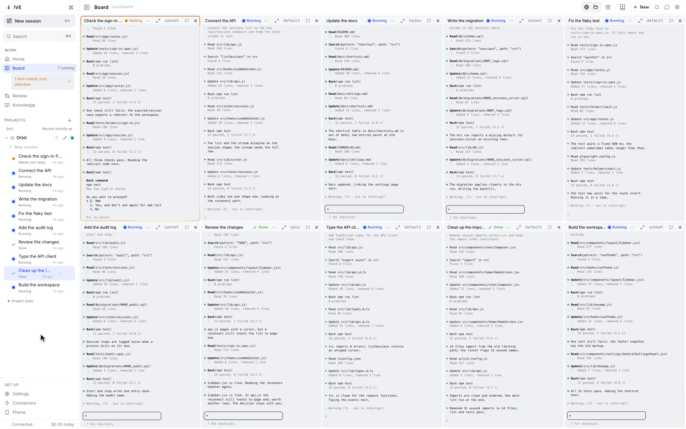
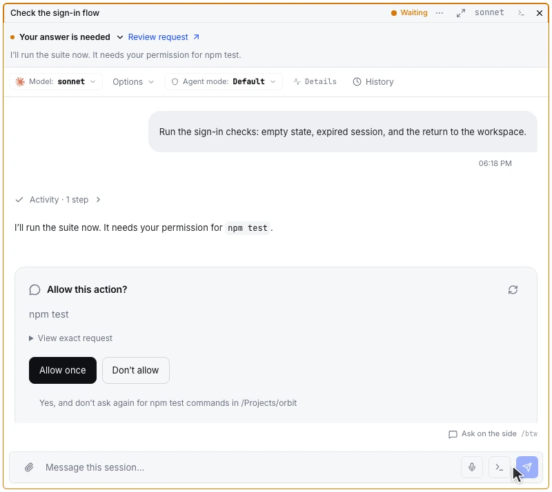
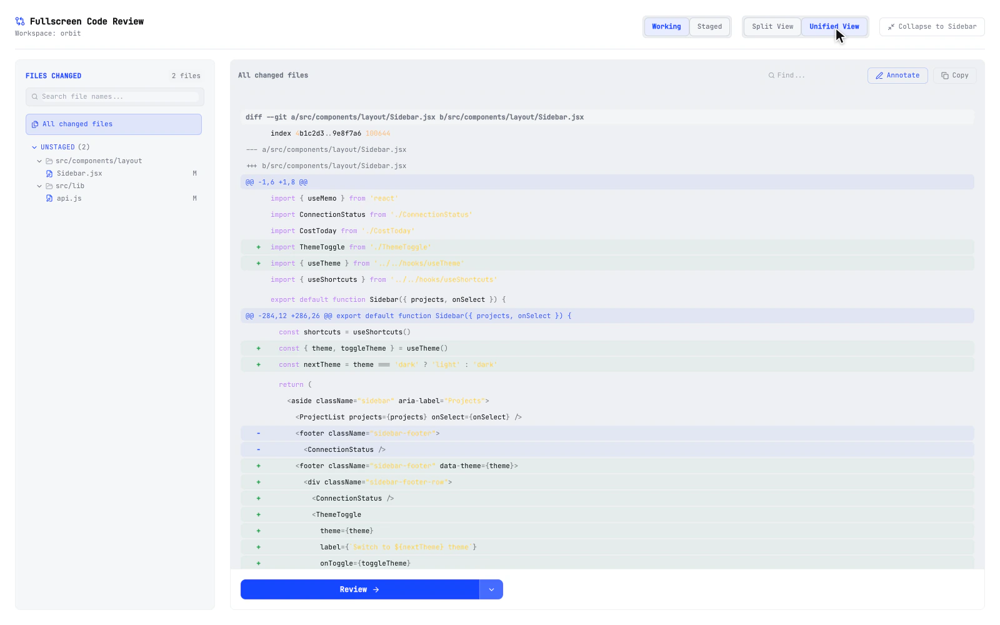
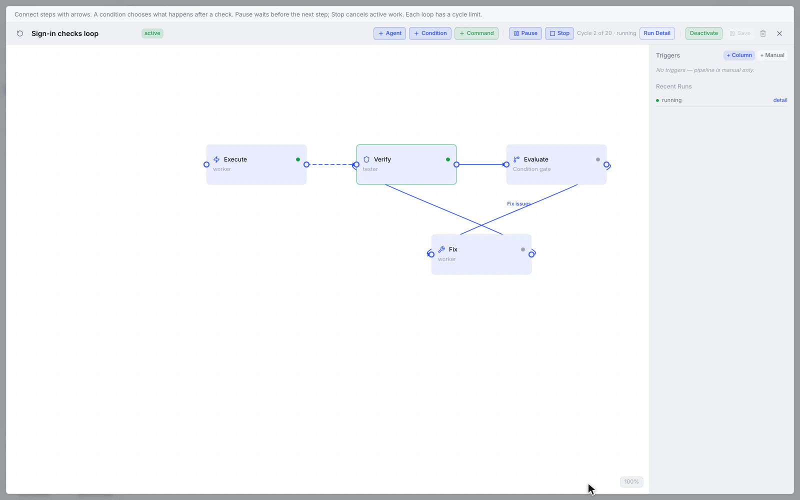

Ihre Agenten.
Ein Arbeitsplatz.
Aufgaben parallel starten. Sehen, wer Sie braucht. Änderungen prüfen. IVE bringt Ihre KI-Programmierhelfer in ein gemeinsames Fenster.

Mehrere Aufgaben. Ein gemeinsamer Überblick.
Claude Code, Codex und Gemini (Antigravity CLI) laufen in eigenen Sitzungen. Sie sehen sofort, wo Arbeit weiterläuft und wo Sie gefragt sind.

Die Rückfrage steht direkt beim Auftrag.
Antworten und Freigaben bleiben im Zusammenhang der Sitzung. Sie entscheiden, wie es weitergeht, während die anderen Agenten weiterarbeiten.

Vom fertigen Auftrag zur geprüften Änderung.
Geänderte Dateien und Unterschiede stehen direkt im Arbeitsplatz. Prüfen Sie das Ergebnis und geben Sie Rückmeldung, wo noch etwas fehlt.

Agenten und Prüfungen zusammenbringen.
Beginnen Sie mit einer einzelnen Aufgabe. Verbinden Sie bei Bedarf weitere Agenten und Prüfschritte zu einem wiederholbaren Ablauf.
Originale IVE-Oberfläche mit animierten Beispieldaten. Produktansichten und interaktive Demo auf ive.dev
Ihr Rechner.
Ihre Zugänge. Ihre Entscheidung.
IVE gibt Ihrer Arbeit einen gemeinsamen Ort. Ihre vorhandenen Programmierhelfer und deren Anbieter bleiben Teil Ihres Setups.
- Läuft auf Ihrem Mac
- IVE läuft lokal auf Ihrem Rechner. Ihre Programmierhelfer verbinden sich wie gewohnt mit ihren Modellanbietern.
- Ihre bestehenden Logins
- Nutzen Sie Ihre Zugänge für Claude Code, Codex und Gemini. Ein zusätzliches IVE-Konto ist nicht erforderlich.
- Offen und einsehbar
- Der Quellcode ist unter Apache 2.0 verfügbar. Telemetrie ist standardmäßig ausgeschaltet.
Kurz antworten.
Auch unterwegs.
Die iPhone-App kommt demnächst in den App Store. In der Browser-Demo können Sie die mobile Ansicht mit Terminals und Rückfragen bereits ausprobieren.
iPhone-Vorschau ansehenBringen Sie Ihre Agenten
an einen Tisch.
Starten Sie auf Ihrem Mac oder lernen Sie IVE zuerst in der Browser-Demo kennen.